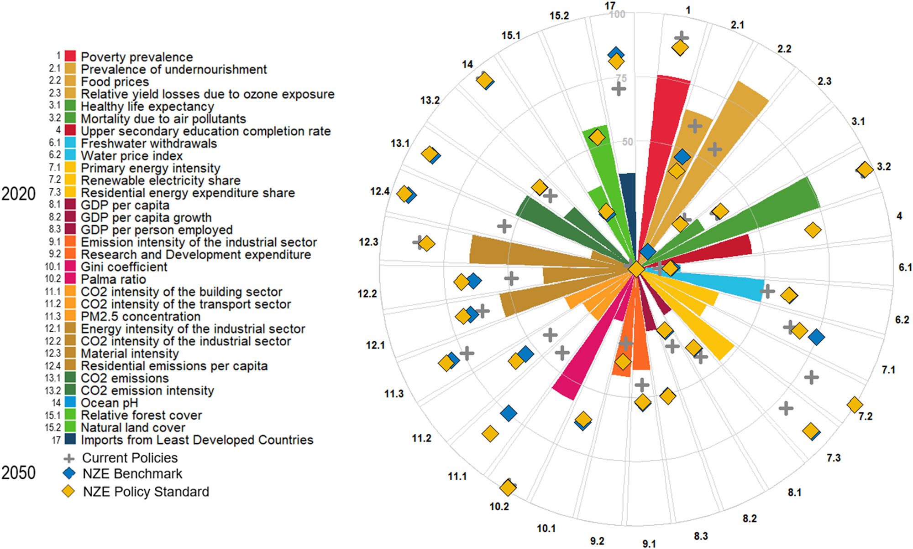
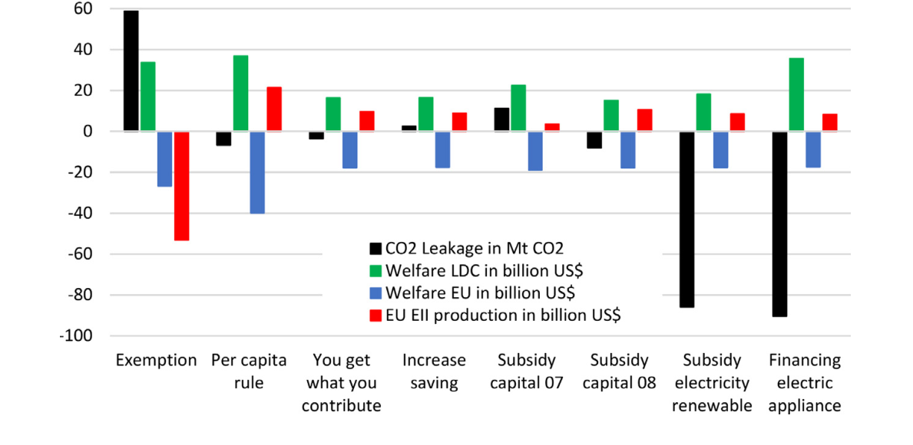
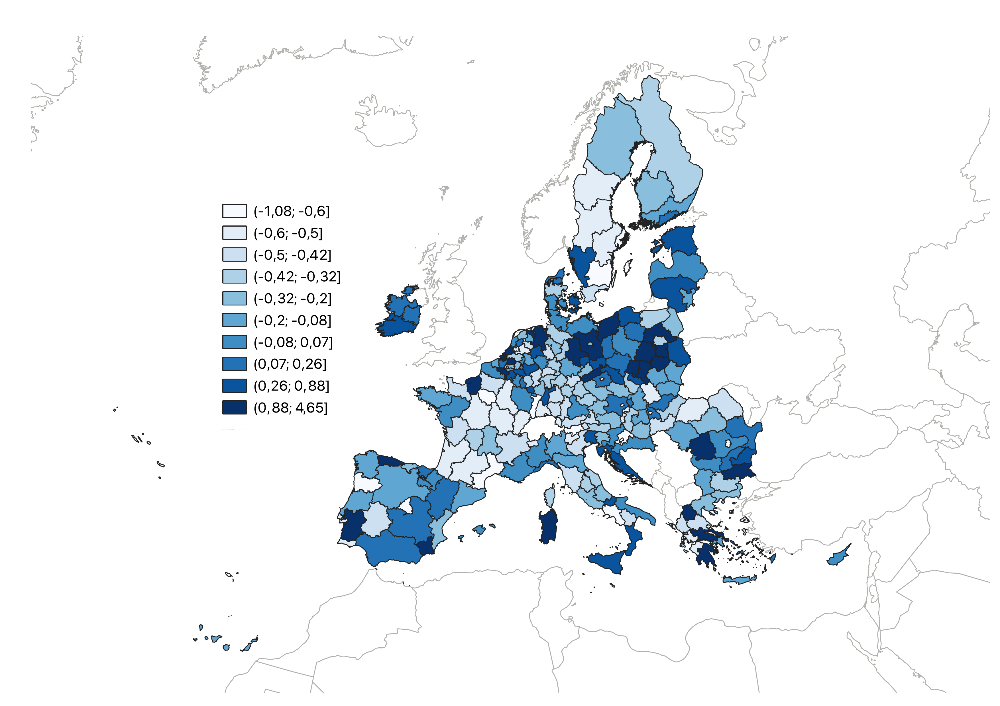
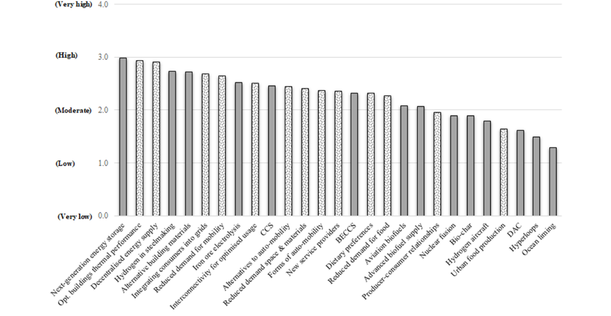
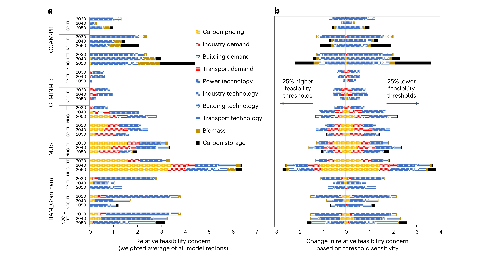

Trade war to cooperation: scrutinizing China’s strategies to the EU carbon border adjustment mechanism
Examines China’s potential responses to the EU CBAM, including retaliation and resource shuffling.
Research on climate policy, international trade, regional distributional impacts, energy transitions, and integrated assessment and economic modelling.

Linking the EU and Chinese carbon markets changes the distribution of economic welfare across EU countries.

Alternative ways to redistribute CBAM revenue can affect welfare and mitigation outcomes for developing countries.

An exposure index identifies different dimensions of transition risk across 242 European regions.

Experts assess the mitigation potential of technological and non-technological low-carbon innovations.

Harmonising key assumptions makes comparisons between different integrated assessment models more meaningful.
19 research publications, organised by year and research theme. The ETS-2 corrigendum is linked to its original article.
19 publications shown
Examines China’s potential responses to the EU CBAM, including retaliation and resource shuffling.
Develops a multidimensional exposure index for 242 European regions using principal component analysis.
Combines household expenditure data, economic modelling, and spatial analysis to assess ETS-2 burdens across 1,160 European regions. Low-income and rural households are particularly exposed, highlighting the importance of regionally targeted measures under the Social Climate Fund.
Corrigendum (2026): Updated results and figures are available in the published corrigendum . The main conclusions remain unchanged.
Assesses regional employment effects of the EU Fit for 55 package and carbon border adjustment. CBAM helps reduce employment exposure in energy-intensive industries, but certain regions remain vulnerable to transition-related job losses.
Uses nine climate policy models to evaluate how EU decarbonisation pathways interact with the Sustainable Development Goals. Ambitious mitigation can improve health and agricultural productivity while requiring complementary policies to address risks for poverty, hunger, and economic growth.
Compares seven energy-economic models to assess pathways from the EU Fit for 55 targets to climate neutrality by 2050. The analysis points to near-complete power-sector decarbonisation by 2040 and rapid deployment of renewable energy, electrification, and other mitigation options.
Examines the implications of the EU CBAM for Brazil under alternative climate and trade scenarios. Brazil’s relatively low-carbon energy-intensive production may gain trade competitiveness, although sectoral advantages do not necessarily eliminate economy-wide welfare costs.
Uses four integrated assessment models to assess emissions and temperature implications of countries’ post-COP26 pledges. Long-term net-zero pledges can bring projected warming below 2°C, but delivering them requires substantial technological deployment and raises feasibility and cost concerns.
Models joint CBAM implementation by the EU, United States, and China as a potential climate-club arrangement. Coordinated implementation reduces carbon leakage and improves competitiveness and welfare within the coalition relative to unilateral or no-CBAM alternatives.
Uses an international expert survey to examine potentially transformative low-carbon innovations.
Uses a global computable general equilibrium model to assess EU restrictions on Russian fossil-fuel imports in the context of Fit for 55. Extending the embargo to natural gas substantially raises European welfare costs and reshapes energy use and electricity generation.
Evaluates complementary policies that can reduce negative impacts of the EU CBAM on least developed countries.
Combines three energy-economy models with investment portfolio analysis across six major emitting regions. Recovery packages with a substantial share of solar photovoltaics investment can support both emissions reductions and employment, although outcomes vary by model and region.
Uses macroeconomic modelling to examine the costs of a European embargo on Russian energy imports within the Fit for 55 context. The findings highlight higher energy supply costs and substantial adjustments in natural gas consumption and electricity production.
Projects long-term emissions and warming based on current policies and mitigation pledges using seven integrated assessment models. The study finds large differences between model trajectories and concludes that even its most optimistic continuation of current efforts is insufficient to hold warming to 2°C.
Uses the GEMINI-E3 computable general equilibrium model to assess economic outcomes of linking EU and Chinese emissions trading schemes. Market integration lowers overall mitigation welfare costs, but gains differ across EU member states and industrial sectors.
Compares eleven models under scenarios developed from stakeholder concerns to explore Europe’s likely direction if current climate policies continue. The model results suggest the EU is not on track to meet its more ambitious 2030 target without stronger action.
Introduces harmonisation steps that help reduce differences between integrated assessment model responses.
Combines a global dynamic general equilibrium model with strategic multiplayer games to assess incentives for climate change mitigation. The analysis examines unilateral gains, free-riding, and whether international transfers could encourage wider cooperation.